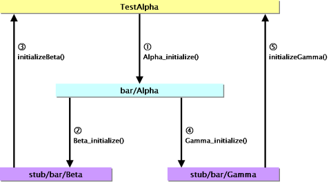

Tutorial
SanctuaryでAPI仕様をどのように記述するかを具体的な例を用いて説明します。より詳細な記法については、Referenceを参照してください。
初級編
パッケージとクラス
APIの定義はパッケージとクラスで名前空間を定義します。生成されるファイル（ヘッダファイル、HTMLファイル、TeXファイルなど）のファイル名は、パッケージ名とクラス名で決まります。
生成されるヘッダファイルのファイル名は、パッケージ名/クラス名.hになります。ただし、パッケージ名に含まれる_は/に展開されます。例えば、パッケージfoo_bar、クラスBazの場合、生成されるヘッダファイルはfoo/bar/Baz.hとなります。
生成されるHTML、TeXファイルのファイル名は、それぞれパッケージ名_クラス名.html、パッケージ名_クラス名.texになります。例えば、パッケージfoo_bar、クラスBazの場合、生成されるHTMLファイルはfoo_bar_Baz.htmlとなります。
入力するXMLファイルは次のような形式になります。
命名規則
APIの記述の前に、おおよその命名規則を次のように決めておきます。
さらに識別子が衝突しないように、パッケージ名とクラス名を利用して、メンバ名以外の識別子にパッケージ名_クラス名_というプレフィックス（接頭辞）を付加します。ただし、例外的にクラスのインスタンスとなる構造体のタグ名はパッケージ名_クラス名にします。
例として、整数を扱うcom_exampleパッケージのクラスInteger0の記述を次に示します。
このXMLファイルから生成されるヘッダファイルを次に示します。ヘッダファイルは二重インクルード防止のためのマクロパッケージ名_クラス名_Hでガードされます。
@展開
クラスInteger0ではプレフィックスcom_example_Interger0_が頻繁に現れるため、ヘッダファイルを直接書くより簡単になったとは言えません。プレフィックスを実体宣言と実体参照で記述するという方法もありますが、@展開を使用すればより簡単に記述することができます。
@展開とは特定の属性の値に含まれる@をパッケージ名_クラス名に置換する機能です。@展開を使用してクラスInteger0を書き直したクラスInteger1を次に示します。
生成されるヘッダファイルはInteger0とInteger1の違いだけなので省略します。@展開の詳細はリファレンスの@展開を参照してください。
名前空間展開
確かに@展開で入力の手間を省くことができます。しかし、最初に決めたような命名規則を採用し、メンバ名を除く識別子にプレフィックスを必ず付加するのであれば、@展開よりも名前空間展開を使用した方が便利です。@展開とは異なり、名前空間展開では後述するインポートマクロを利用できるようになるからです。
名前空間展開とは特定の属性の値にパッケージ名_クラス名_を前置する機能です。ただし、属性の値が@のときはパッケージ名_クラス名に展開します。
名前空間展開を有効にするにはnamespace要素を指定する必要があります。名前空間展開を使用してクラスInteger1を書き直したクラスInteger2を次に示します。
このXMLファイルから生成されるヘッダファイルを次に示します。
ヘッダファイルの終わりで定義されているマクロがインポートマクロです（詳細は次のセクションで説明します）。名前空間展開の詳細はリファレンスの名前空間展開を参照してください。
インポートマクロ
名前空間展開を使用した場合、インポートマクロを利用することができます。インポートマクロとは、ソースコードでパッケージ名を省略するためのマクロ定義です。インポートマクロを有効にするには、マクロパッケージ名_クラス名_IMPORTを定義してからヘッダファイルをインクルードします。例えば、マクロcom_example_Integer2_IMPORTを定義してから、パッケージcom_exampleのクラスInteger2のヘッダファイルをインクルードすると、クラスInteger2のインポートマクロが有効になります。
インポートマクロを有効にした場合、そのファイルのスコープではパッケージ名を省略することができるようになります。ただし、そのファイルのスコープでクラス名が衝突しない必要があります。
インポートマクロを定義してパッケージ名を省略するコードの例を次に示します。このコードはパッケージcom_exampleのクラスFooとクラスBarを使用しますが、クラスFooに関してはインポートマクロを使用してパッケージ名を省略しています。
もちろん、インポートマクロに相当するものを手で書くこともできますが、それはあまりにも非生産的な行為です。そしてもっと酷いのは、クラス名が衝突するわけでもないのに、ひたすらプレフィックス（実際はcom_example_よりは短いでしょうが...）をAPIの利用者が入力するように強要することでしょう。
NOTES インポートマクロを利用してもリンカから見えるシンボルに影響はありません。
実体宣言と実体参照の利用
記述したAPIからヘッダファイルを生成できました。今度はドキュメントの記述を追加して、HTMLやTeXのAPIリファレンスを生成できるようにします。しかし、その前に、XMLの実体宣言と実体参照を使用して、重複する記述を整理しておきます。
クラスInteger2には、thisポインタに相当する引数を第1引数に指定する関数がいくつかあります。それらを実体参照でまとめておきます。実体宣言と実体参照を使用してクラスInteger2を書き直したクラスInteger3を次に示します。
生成されるヘッダファイルには変化はありませんので省略します。
ドキュメントの追加
クラスInteger3にドキュメントを追加した例を次に示します。クラスInteger3にdesc要素を追加したクラスInteger4を次に示します。
生成されるHTMLファイルは次のようになります。
生成されるTeXファイルそのものは省略しますが、それをPDFに変換したものを次に示します。
パッケージのドキュメント
パッケージのドキュメントを記述することもできます。ただし、パッケージを記述したXMLファイルからヘッダファイルは生成されません。
簡単なサンプル
上述の例に加え、いくつか簡単なサンプルを用意しました。com_exampleパッケージを次に示します。
また、TeXファイルから作成したPDFファイルも用意しておきました。
中級編
共用体
共用体の例として、クラスUnionを次に示します。
生成されるヘッダファイルと、HTMLファイルは次のようになります。member要素のtype属性に含まれる#はname属性の内容で置き換えられます。
列挙型
列挙型の例として、クラスWhenceを次に示します。
生成されるヘッダファイルと、HTMLファイルは次のようになります。
struct要素（やunion要素）と同様に、enum要素にalias属性を指定することで、列挙型のtypedefも記述できます。
複数行マクロ
マクロ定義の例として、クラスTimeを次に示します。
生成されるヘッダファイルと、HTMLファイルは次のようになります。複数行のマクロ定義には自動的にバックスラッシュを展開します。
ネストする構造体
構造体のメンバとして構造体を定義したい場合は、member要素の代わりにstructmember要素を使用します。structmember要素のname属性には（member要素のname属性と同様に）メンバ名を指定します。構造体のタグ名を指定したい場合はtag属性にタグ名を指定します。tag属性を指定しない場合は、タグ名が匿名の構造体になります。
structmember要素の中にはmember要素をネストすることができます。それにより、ネストする構造体を記述できます。
ネストする構造体の例を次に示します。
構造体のメンバに共用体、列挙型を記述することもできます。また同様に、共用体のメンバにもネストした定義を記述できます。
NOTES 構造体の定義がネストするようなソースコードを記述することを推奨しているわけではありません。構造体を匿名にすることが重要でなければ、構造体はすべてstruct要素で定義しておきましょう。そして、member要素を使用して構造体型のメンバを記述した方がよいでしょう（例えば、type属性の値をstruct Fooのようにする）。
関数ポインタ型のメンバ
構造体のメンバとして関数ポインタ型のメンバを記述する場合は、member要素の代わりにmethod要素を使用します。関数ポインタ型のメンバをもつ構造体の例を次に示します。
生成されるヘッダファイル、HTMLファイルは次のようになります。
NOTES method要素ではなく、member要素を使用して関数ポインタ型のメンバを記述することもできます（例えば、type属性の値をint (*#)(int)のようにする）。その場合は、引数や戻り値などのドキュメントを指定することができません。また、予め関数ポインタ型をtypedefで型定義しておき、それを使用して記述することもできます。
ヘッダファイルのインクルード
ヘッダファイルの内部で別のヘッダファイルをインクルードする場合は、次のようにinclude要素を使用します。
生成されるヘッダファイルは次のようになります。
NOTES include要素はヘッダファイルだけに影響があります。
不完全な構造体の定義
型の詳細が隠されている構造体をAPIに記述することがあります。例えば、pthread(3)のpthread_t型や、XlibのRegion型などです。しかし、struct要素ではこのような不透明なデータ型（opaqueなデータ型）を記述することができません。struct要素は完全な構造体を宣言するからです。
Sanctuaryは関数の引数や戻り値、typedefによる型定義、構造体のメンバなどの型（type属性の値）から構造体のタグ名を抽出して、必要な構造体の前方定義をヘッダファイルに出力します。つまり、ほぼ自動的に不完全な構造体を定義（構造体を前方定義）するので、通常は明示的に前方定義する必要はないでしょう。
次のいずれかの方法で、不完全な構造体を定義できます。
export要素の使用例を次に示します。
import要素の使用例を次に示します。
同様に、不完全な共用体も定義できます。また、GCCでは不完全な列挙型も定義できます。
NOTES import要素はヘッダファイルだけに影響があります。
可変長引数
可変長引数の関数を記述するには、次のようにvariableparam要素を使用します。
グローバル変数
グローバル変数を記述するには、次のようにglobalvariable要素を使用します。
上級編
関数の修飾子
GCCでは関数の定義に__attribute__((__const__))などの属性を付加することができます。このような属性はmodifier要素で次のように指定することができます。
splintのアノテーション
splintという静的解析ツール（lintのようなもの）では、/*@...@*/という形式のアノテーションを使用します。Sanctuaryはこのようなコメントを通常とは異なるスタイルで強調表示します。splintのアノテーションを埋め込んだ例を次に示します。
インタフェース
関数ポインタ、つまりコールバック関数を引数とする関数のAPIドキュメントを書く場合、そのコールバック関数がどのように呼ばれるのか、どのような値を返さなければならないかを記述することになります。DoxyGenなどでは関数ポインタをtypedefで定義して記述することが多いようです。しかし、コールバックされる関数がインスタンスメソッド的な関数の場合、そのインスタンスのインタフェースとして記述したいこともあります。
例として4.4BSDのfunopen(3)を考えてみます。man(1)によると、funopen(3)の定義は次のようになっています。
このAPIはインスタンスのポインタ（cookie）と、その4つのインスタンスメソッド（readfn, writefn, seekfn, closefn）を渡して、FILE構造体へのポインタを返すという、FILE構造体のファクトリーメソッドと捉えてもよいでしょう。つまり、Javaのインタフェースの意味で、あるインタフェースのオブジェクトを引数に指定すると言えます。
そのインタフェースをOpenableインタフェースとすることにして、次のように定義します。
HTMLファイルは次のようになります。
NOTES interface要素はドキュメントだけを生成します。
一方、Openableインタフェースのオブジェクトを受け取り、Fileクラスのインスタンスを生成するファクトリークラスをFileFactoryクラスとします。FileFactoryクラスを次のように定義します。
アブストラクトメソッド
インタフェースと同様に、インスタンスメソッドとしてコールバックする関数を登録するが、むしろそのクラスを拡張する目的でコールバック関数を登録するようなAPIの場合、インタフェースというよりはJavaのアブストラクトメソッド（もしくはC++のバーチャルメソッド）のように記述したい場合があります。
次のようなThreadクラスを考えてみます。
実際どのようにしてThreadクラスを継承したクラスを定義するかはさておき、このように抽象クラスを定義することができます。
NOTES abstractmethod要素はドキュメントだけを生成します。
ユニットテスト
C言語ではユニットテストをやりにくいものですが、Sanctuaryのスタブ自動生成機能を使用することで、煩雑な作業を減らすことができます。
例として、barパッケージのクラスAlpha、Beta、Gammaからなるライブラリを考えてみます。AlphaはBetaとGammaを使用するクラスで、次のようなAPIを実装しているとしましょう。
ここではAlpha_initialize()メソッドをテストしてみましょう。
まずユニットテストの準備として、クラスAlpha、Beta、Gammaのソースコードを用意します。
これらからヘッダファイルとオブジェクトファイルを生成します。
次にソースコードのXMLファイルから次のスタブを生成します（スタブの生成方法はスタブの生成を参照してください）。
さらにこれらをコンパイルして、次のオブジェクトファイルを生成します。
これで準備は終わりました。今度はAlphaをテストするプログラムとして、次のようなTestAlpha.c（TestAlphaクラス）を用意します。
これは「TestAlpha_testInitialize()メソッドを呼び出すとAlpha_initialize()メソッドをテストする」というものです。TestAlpha_testInitialize()は、最初にスタブの関数をオーバライドしてから、Alpha_initialize()を呼び出し、最後に結果を検証します（例では説明を簡単にするため、検証にはassert(3)を使用しています）。
TestAlpha.cをコンパイルするときに、次のオブジェクトファイルとリンクします。
TestAlphaがAlpha_initialize()を呼び出したときのシーケンスの概略は次の図のようになります。

同様に、Beta、Gammaのユニットテストを行うこともできます。